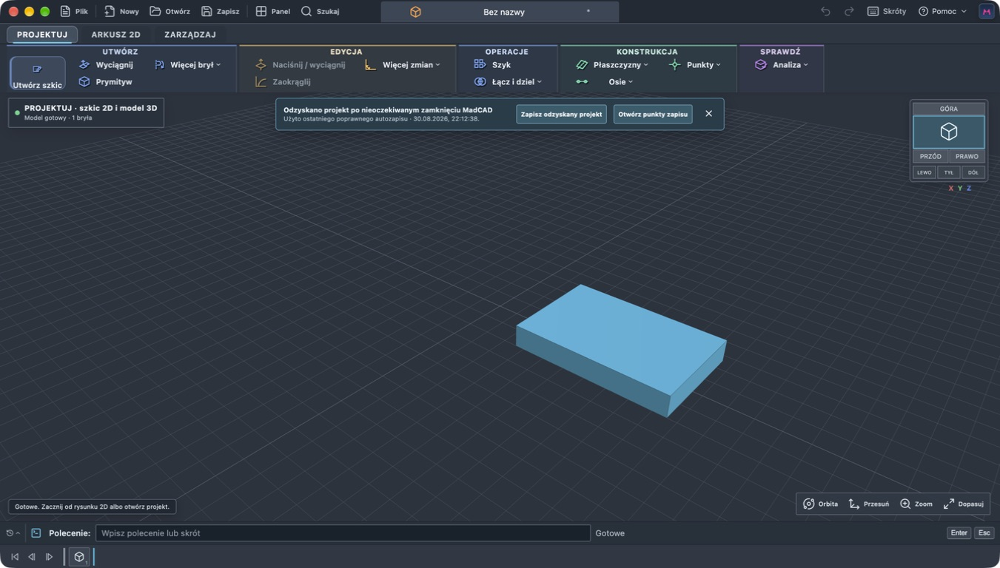

macOS
Apple Silicon
Mac z procesorem M1 lub nowszym. Aplikacja nie jest podpisana certyfikatem Apple.
Pobierz DMGCAD 2D + parametryczne 3D
MadCAD łączy szybkie rysowanie znane z klasycznych programów CAD z historią modelu, bryłami, powierzchniami i przygotowaniem produkcji.
Wersja 6.5.3 · macOS, Windows i Linux · bezpłatnie do użytku prywatnego

Pobierz MadCAD 6.5.3
Wybierz system. Wszystkie paczki pochodzą bezpośrednio z oficjalnego wydania w repozytorium MadCAD.
macOS
Mac z procesorem M1 lub nowszym. Aplikacja nie jest podpisana certyfikatem Apple.
Pobierz DMGWindows
Instalator EXE dla komputerów x64. Windows może poprosić o dodatkowe potwierdzenie.
Pobierz EXELinux
Przenośny AppImage. Po pobraniu nadaj plikowi uprawnienie do uruchomienia.
Pobierz AppImageJeden przepływ
Najważniejsze narzędzia
Osobne obszary prowadzą od projektu do dokumentacji i wytwarzania, a wspólna historia zachowuje zależności.
Kliknij punkt, wskaż kierunek, wpisz długość i zatwierdź Enterem. Podstawowe skróty działają bez osobnego wiersza poleceń.
Szkice nie znikają po operacji. Wymiary, profile, ścieżki i bryły pozostają powiązane oraz możliwe do przebudowy.
Twórz arkusze A4 i A3, rzuty, przekroje, detale, opisy otworów, tolerancje i tabliczkę rysunkową.
Importuj STEP, STL, 3MF, DXF i lokalnie konwertowany DWG. Eksportuj modele oraz dokumentację do dalszej pracy.
Prosta licencja
Do użytku prywatnego nie potrzebujesz klucza ani opłaty, ale wymagane jest bezpłatne konto MadCAD. Firma lub organizacja może przetestować pełny plan przez 40 dni, a następnie wykupić bezterminową licencję na stanowisko.
Pierwsze uruchomienie
Nie wyłączaj zabezpieczeń systemu. Wystarczy jednorazowo potwierdzić aplikację pobraną z oficjalnego wydania.
Paczki wydania zawierają sumy SHA-256, które pozwalają sprawdzić integralność pobranego pliku.